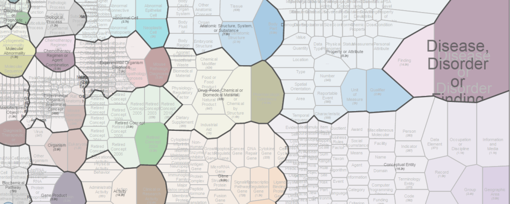

Study summary statistics
data.enanomapper.net
ambitlri.ideaconsult.net
Ontology visualisation
Chemical substance (CHEBI59999)
eNanoMapper ontology
eNanoMapper ontology (subclasses of BFO_0000040)
BioAssay ontology (BAO)
Gene ontology (GO)
